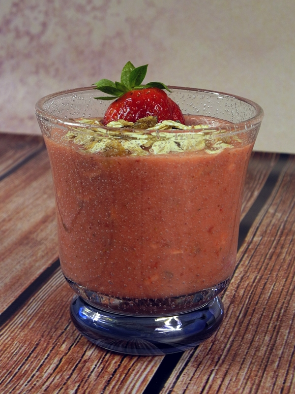

Koktajl z truskawek
Truskawki to moje ulubione owoce! Oto przepis na mój koktajl nr 1! Swojego czasu zajadałam się nim prawie co wieczór... Polecam go również na gorące dni - przygotowuję go z owoców wyjętych z lodówki, więc orzeźwienie gwarantowane!
Składniki:
- 500 g truskawek
- jogurt naturalny gęsty
- musli
- cukier brązowy
Przygotowanie:
Truskawki myję, oddzielam szypułki i miksuję blenderem. Następnie dodaję jogurt (jego ilość jest zależna od upodobań, ja dodaję ok. 120 g), a jeśli truskawki nie są zbyt słodkie, to dodaję niewielką ilość brązowego cukru - w szczycie słonecznego sezonu jest on na szczęście zbędny... :) Całość ponownie miksuje blenderem.
Ostatnio do koktajlu dorzucam parę łyżek musli i mieszam je łyżką. Moje ulubione (a zarazem to uwiecznione na zdjęciu), to gotowa mieszanka Master Crumble Früchte (w zielonkawym opakowaniu) z Lidla.